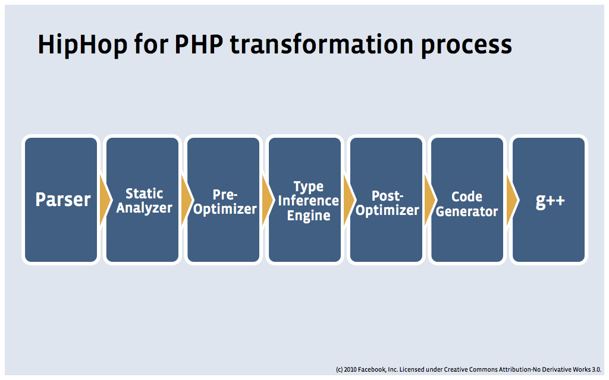

Contents
- About me
- Quick Start
- Syntax in 5 minutes
- Runtime Enviroment
- Build web site
- Modern PHP
- Advanced OOP
- Database access
- Frameworks
- PHP ecosystem
- PSR
- Package management
- Facebook and PHP
- The future of PHP
そとに発信しましょう
http://sjitech.github.io
About me
- Another Haidong Wang:)
- Entered SJI group in 1999
- Leave SJI from 2012/05 to 2013/07, develop mobile social games in GREE
- Then, I'm back...
- From 2013/08
- Advanced-tech Research Center
- Have lots of Java experience
- Playing with PHP recently
- Vimer, also taking interest in emacs
Quick start
Syntax in 5 minutes
Php has a syntax very like C and Java
<?php // write php code in <?php ?>
// one line comment
/*
block comment
write multiple lines comment
*/
echo "hello world!"; // use ; seperate code
$hoge = "string var";
$moo = 3;
$foo = array( // variable start with $
"bar" => 3,
"hoge" => "test",
);
function getBar($input) {
return "hello $input";
}
// when source only contains php code, ?> can be omitted
Quick start
Syntax in 5 minutes
Data types and operation
$int = 100;
$float = 100.123;
$enable = true; // true/false is case incentive
$user = null; // null is also case incentive
$i = 1 + 1;
$i = 1 - 1;
$i = 1 * 1;
$i = 1 / 2;
$i = 3 % 2;
$i++;
$i--;
$name = "wang haidong";
$hello = "hello $name"; // expand $name value
$hai = 'hello $name'; // literal $name
$str = "hello" . " world"; // concat two string, the reason for method call using ->
// lots of global method for string
$substr = substr('abcd', 0, 2); // ab
$split = explode(',', 'aaa,bbb,ccc');
Quick start
Syntax in 5 minutes
Array
$arr = array( // mixed type of key is allowed
2 => 4,
6 => "string value",
"strkey" => array(
"nest key" => "nest value",
9 => "something",
),
"foo" => 100.23,
"bar" => "hello", // for convenience, last comma is permitted
);
$val = $arr['strkey']; // get value
$arr[6] = "new value"; // set value
// lots of global method
$keys = array_keys($arr);
$values = array_values($arr);
unset($arr['key']); // delete key
// from PHP 5.4, can define array like json or python
$array = [
"foo" => "bar",
"bar" => "foo",
];
Quick start
Syntax in 5 minutes
Control structure
if ($foo == 2) { // auto convert data type then check value
} else if ($foo === 3) { // check value and data type, do not auto convert data type
} elseif ($foo > 4) { // elseif is OK
} else {
}
do
{
} while ($i < 5);
while ($i < 5) {
}
for ($i = 0 ; $i < 5 ;$i++) {
}
foreach ($array as $v) { // iterate through array values
}
foreach ($array as $k => $v) { // iterate through array keys and values
}
Quick start
Syntax in 5 minutes
Method
<?php
function sum($v1, $v2) { // global method
return $v1 + $v2;
}
$total = sum(1, 2); // $total = 3 // just call global method name
function get_multi($v1 = 10, $v2) { // method parameter can have default value
$v1 += 100;
$v2 += 200;
return array($v1, $v2);
}
list($ret1, $ret2) = get_multi(1, 2); // $ret1 = 101 / $ret2 = 202
function foo()
{
$numargs = func_num_args();
$arg_list = func_get_args(); // dynamic method parameter
for ($i = 0; $i < $numargs; $i++) {
echo "Argument $i is: " . $arg_list[$i] . "\n";
}
}
foo(1, 2, 3);
Quick start
Syntax in 5 minutes
OOP
interface Person { }
class Foo {
public static $count = 0;
public static function plusOne() {
return "The count is " . ++self::$count . ".\n";
}
public function __construct() { }
}
class User extends Foo implements Person {
protected $name = null;
public function __construct($name) { // constructor, we'll talk about magic method later(__xxx)
parent::__construct();
$this->name = $name;
}
public function hello() {
printf("%s: Hello!\n", $this->name);
}
}
$user = new User('Mike');
$user->hello(); // call object method by ->
echo Foo::plusOne();
echo Foo::$count . "\n"; // weird:)
Quick start
Syntax in 5 minutes
Some tips
echo "hello world"; // no line break
print "hello world"; // no line break
$name = "sji";
printf("hello %s\n", $name); // C style print
$message = sprintf("hello %s\n", $name); // create new string
class MyClass {
protected $age = 36;
public $job = "programmer";
}
$my = new MyClass; // () can be omitted
var_dump($my); // for debug, with data type information
print_r($my); // for debug, for html display, only value
Quick start
Syntax in 5 minutes
Some tips
$my = 5;
isset($my); // true
isset($unknown); // false
$foo = array();
is_null($foo); // false
empty($foo); // true
define('LOGIN_COUNT', 2); // constant
echo LOGIN_COUNT; // constant accessed without $
// here doc string
echo <<<EOM
PHPとは、HTMLへの埋め込み型プログラミング言語です。<br />
正式名称は「PHP: Hypertext Preprocessor」です。<br />
PHPは{$purpose}に利用されます。<br />
<a href="detail.php">詳細を読む<a>
EOM;
Quick start
Runtime Enviroment
- PHP can be installed on any major platform
- Mostly installed with apache as mod_php
- Recently nginx+FastCGI/FPM+php become popular
$ php hoge.php # run script
$ php -r "var_dump('hello php');" # evalutae php code directly
$ php -l hoge.php # check syntax
[2013-08-20 20:12] > php -v # show php.ini content
PHP 5.3.27-1~dotdeb.0 with Suhosin-Patch (cli) (built: Jul 25 2013 20:17:25)
Copyright (c) 1997-2013 The PHP Group
Zend Engine v2.3.0, Copyright (c) 1998-2013 Zend Technologies
[2013-08-20 20:29] > php -i
phpinfo()
PHP Version => 5.3.27-1~dotdeb.0
...
Quick start
Build web site
Get HTTP data
echo $_SERVER['REQUEST_METHOD']; // get server enviroment variables
echo $_SERVER["HTTP_USER_AGENT"];
echo $_POST['username']; // get user input
echo $_GET['index'];
Cookie and session
$time = $_COOKIE["firstphp"];
setcookie("firstphp", "value", time()+60*60);
session_start();
$_SESSION['syouhin'] = "new_session_value";
$got = $_SESSION['syouhin'];
session_destroy();
Quick start
Build web site
Upload file
<form enctype="multipart/form-data" action = "test_02.php" method = "post" >
<input type="file" name="file_data1">
<input type="submit" name="Upload" value="Upload">
</form>
$filename = $_FILES["file_data1"]["name"];
$filesize = $_FILES["file_data1"]["size"];
$result = @move_uploaded_file( $_FILES["file_data1"]["tmp_name"], $filename); // ignore error
if ( $result === true ) {
echo "Upload successfully!";
}
Interact with html
<html>
<body>
Welcome <?php echo $username; ?>!<br />
</body>
</html>
There's lots of template libraries, no need to write inline php code in html now.
Advanced OOP
About classloader
PHP do not have classloader. Developers make their own implements over and over again.
<?php
// only produce a warning (E_WARNING) and the script will continue
include 'header.php';
// produce a fatal error (E_COMPILE_ERROR) and stop the script
require 'header.php';
include_once 'foo.php';
require_once 'foo.php';
$val = functionFromIncludeFile();
In large projects, dependancy management become impossible when include/require exists in every scripts.
Then we realize a classloader(or scripts loader) stuff is necessary for PHP
- Remove include/require code from scripts and centerize them to one script.
- Load the above script on application start.(bootstrap is a usual name)
- Make it a best practice and standard.(PSR-0, we'll talk later)
Advanced OOP
PSR-0 classloader
A recommended classloader implment from PSR-0 documents.
<?php
function autoload($className)
{
$className = ltrim($className, '\\');
$fileName = '';
$namespace = '';
if ($lastNsPos = strripos($className, '\\')) {
$namespace = substr($className, 0, $lastNsPos);
$className = substr($className, $lastNsPos + 1);
$fileName = str_replace('\\', DIRECTORY_SEPARATOR, $namespace) . DIRECTORY_SEPARATOR;
}
$fileName .= str_replace('_', DIRECTORY_SEPARATOR, $className) . '.php';
require $fileName;
}
Convert namespace(talk later) and _ char into path seperator
\namespace\package\Class_Name =>
/path/to/project/lib/vendor/namespace/package/Class/Name.php
Advanced OOP
Namespace
Just like pakage in Java or module in Python
// myproject/database/connection.php
<?php
namespace MyProject\Database
class Connection {
// Handling database connections
}
<?php
namespace OtherProject;
// This holds the MyProject\Database namespace with a Connection class in it
require 'myproject/database/connection.php';
// use its fully qualified name
$connection = new \MyProject\Database\Connection();
// Import the Connection class
use MyProject\Database\Connection;
$connection = new Connection();
// alias
use MyProject\Database as MyDatabase;
$connection = new MyDatabase\Connection();
Advanced OOP
Magic method
Constructors and Destructors
<?php
class MyClass {
public $prop1 = "I'm a class property!";
public function __construct() {
echo 'The class "', __CLASS__, '" was initiated!<br />';
}
public function __destruct() { // executed on exit of this script
echo 'The class "', __CLASS__, '" was destroyed.<br />';
}
public function setProperty($newval) {
$this->prop1 = $newval;
}
public function getProperty() {
return $this->prop1 . "<br />";
}
}
$obj = new MyClass;
echo $obj->getProperty();
unset($obj); // Destroy the object
Advanced OOP
Magic method
ToString
<?php
class MyClass {
public $prop1 = "I'm a class property!";
public function __toString() {
echo "Using the toString method: ";
return $this->getProperty();
}
}
$obj = new MyClass;
echo $obj; // Output the object as a string
Advanced OOP
Magic method
Property Overloading
class Device {
public $data = array(); // stores misc. data in an array
public function __get($name) {
if(array_key_exists($name, $this->data)) { // check if the named key exists in our array
return $this->data[$name]; // then return the value from the array
}
return null;
}
public function __set($name, $value) {
$this->data[$name] = $value; // use the property name as the array key
}
public function __isset($name) {
return array_key_exists($name, $this->data);
}
public function __unset($name) {
unset($this->data[$name]); // forward the unset() to our array element
}
//...
}
$device->user = 'Steve'; // call __set()
echo $device->user; // call __get()
unset($device->user); // call __unset()
Advanced OOP
Magic method
Method Overloading
class Device {
//...
public function __call($name, $arguments) {
// make sure our child object has this method
if(method_exists($this->connection, $name)) {
// forward the call to our child object
return call_user_func_array(array($this->connection, $name), $arguments);
}
return null;
}
//...
}
$device = new Device(new Battery(), 'iMagic');
$device->iDontExist();
// __call() forwards this to $device->connection->iDontExist()
From PHP 5.3, __callStatic() added
Advanced OOP
Magic methods
There's other magic methods learned from Java
- __clone(): called on the copy of a cloned object after cloning takes place.
- __sleep(): called when the serialize() function is called on the object.
- __wakeup(): called when the unserialize() function is called on the stored object.
- __invoke() (PHP 5.3): called when code tries to use the object as a function.
class Device { public function __invoke($data) { echo $data; } } $device = new Device(new Battery(), 'iMagic'); $device('test'); // equiv to $device->__invoke('test') - __autoload(): called when a class that doesn’t exist is referenced
Advanced OOP
Error handling
Legacy error handler
<?php
//error handler function
function customError($errno, $errstr)
{
echo "<b>Error:</b> [$errno] $errstr<br>";
echo "Ending Script";
die();
}
//set error handler
set_error_handler("customError",E_USER_WARNING);
//trigger error
$test=2;
if ($test>1)
{
trigger_error("Value must be 1 or below",E_USER_WARNING);
}
Advanced OOP
Error handling
From PHP 5, Exception class was added
From PHP 5.5, finally keyword was added
<?php
try {
throw new Exception('error message');
} catch (Exception $e) {
echo $e->getMessage(), PHP_EOL;
echo $e->getCode(), PHP_EOL; // error code
echo $e->getFile(), PHP_EOL; // error source file
echo $e->getLine(), PHP_EOL; // error source line number
echo $e->getTraceAsString(), PHP_EOL; // error stack trace
}
You can create own exception class inherited from Exception.
Advanced OOP
Reflection in PHP
$editor = new Editor('John Doe');
$reflector = new ReflectionClass($editor);
var_dump($reflector->getMethods());
// invoke method
$publishMethod = $reflector->getMethod('publish');
$publishMethod->invoke($editor); // second call to publish()
// access property
$editorName = $reflector->getProperty('name');
$editorName->setAccessible(true);
$editorName->getValue($editor);
$editorName->setValue($editor, 'Mark Twain');
// indirect reflection use
call_user_func(array($editor, 'getEditorName'));
$methodName = 'getEditorName';
var_dump($editor->$methodName());
Advanced OOP
SPL(Standard PHP Library)
C++ STL(Standard Template Library)
Or Python Standard Library
From PHP 5, forced on from PHP 5.3
Avoid to reinvent the wheel
- Data Structures(stack, queue, heap, linklist etc.)
- Iterators(ArrayIterator, RecursiveArrayIterator etc.)
- Extended exception subclasses
- File Handling(Like Java 7 NIO.2)
- Language enhancement(spl_autoload, SplObserver etc.)
Database access
PHP and MySQL
traditional mysql API
// Connect
mysql_connect('localhost', 'username', 'password')
or die('Could not connect: ' . mysql_error());
// Choose a database
mysql_select_db('someDatabase') or die('Could not select database');
// Perform database query
$query = "SELECT * from someTable";
$result = mysql_query($query) or die('Query failed: ' . mysql_error());
// Filter through rows and echo desired information
while ($row = mysql_fetch_object($result)) {
echo $row->name;
}
Access mysql db through global functions
Database access
PHP and MySQL
PDO, OOP method like JDBC
$name = 'Joe';
try {
$conn = new PDO('mysql:host=localhost;dbname=myDatabase', $username, $password);
$conn->setAttribute(PDO::ATTR_ERRMODE, PDO::ERRMODE_EXCEPTION);
// execute sql directly
$data = $conn->query('SELECT * FROM myTable WHERE name = ' . $conn->quote($name));
// prepared statement, avoid SQL injection
$stmt = $conn->prepare('SELECT * FROM users WHERE username = :username');
$data = $stmt->execute(array(':username' => PDO::quote($_GET['username'])));
foreach($data as $row) {
print_r($row);
}
} catch(PDOException $e) {
echo 'ERROR: ' . $e->getMessage();
}
MySQLi is another API for access mysql db, but now PDO is recommended.
PDO supports 12 different drivers, opposed to MySQLi, which supports MySQL only
Frameworks
Zend Framework
Frameworks
Symfony
Frameworks
Ethna
Created by GREE CTO and used widely in GREE services.
Inspired by Struts framework
Frameworks
CakePHP
Frameworks
FuelPHP
Frameworks
CodeIgniter
Frameworks
Yii
Frameworks
Laravel
Inspired by ruby Sinatra framework
Frameworks
Phalcon
an open source web framework for PHP delivered as a C extension
Frameworks
PhpUnit
Inspired by JUnit
PHP ecosystem
PSR(PHP Standards Recommendation)
PHP Framework Interop Group(FIG) intends to host a cross-section of the PHP ecosystem
At the time of this writing, that dialogue(between project representatives) has spawned four PHP Standards Recommendations: PSR-0 to PSR-3.
PSR-0: Autoloader Standard
- We use require/include everywhere
- Then PHP 5′s magic __autoload() function was introduced
- PHP 5.1.2 made autoloading even better by introducing spl_autoload(), which allows you to register a chain of autoloading functions with spl_autoload_register().
- Example implment
PHP ecosystem
PSR(PHP Standards Recommendation)
PSR-1: Basic Coding Standard
- Only use the <?php and <?= tags.
- Only use UTF-8 without BOM for PHP code.
- Separate side-effects
- Enforce PSR-0.
- Class names must be defined in StudlyCaps.
- Class constants must be defined in upper case with underscore separators.
- Method names must be defined in camelCase.
PSR-2: Coding Style Guide
PSR-3: Logger Interface
Recent frameworks almost implements PSR-0 and PSR-1.
PHP ecosystem
Package management
PEAR PHP Extension and Application Repository
Install ethna framework from PEAR
$ pear channel-discover pear.ethna.jp
$ pear install -a ethna/ethna # install with dependencies
$ pear install ethna/ethna # install withou dependencies
$ pear upgrade ethna/ethna
PHP ecosystem
Package management
composer Dependency Manager for PHP
Package management like NodeJS npm or Ruby bundle
Use json config file
Declaring dependencies in composer.json
{
"require": {
"monolog/monolog": "1.2.*"
}
}
Using Composer in your project folder
$ php composer.phar install
$ composer install
Autoloading
require 'vendor/autoload.php';
Almost every modern framework support composer now.
PHP ecosystem
Facebook and PHP
Facebook is the largest application writed with PHP.
For performance reason, Facebook developed HipHop and HipHop VM(HHVM)
- HipHop is a PHP-to-C++ compiler.
- HHVM is a Virtual Machine like JVM with just-in-time(JIT) compilation.

The future of PHP
We are living in exciting times.
- Better unicode support? Maybe
- Minor enhancements that mirror other programming languages. Already in progress
- The ecosystem will have less frameworks, more meta-frameworks.
- There will be a plethora of new extensions.Like improvement in Java JNI
- There will be less reliance on the Zend Engine. HipHop and Parrot has great chance
- PHP will adapt.Not just web language, maybe embedded in mobile device?
- Drop some obsolete baggage, keep moving
Visit this presentation on Github
Or http://tproject:7000/php_world/php_world.html
<Thank You!>